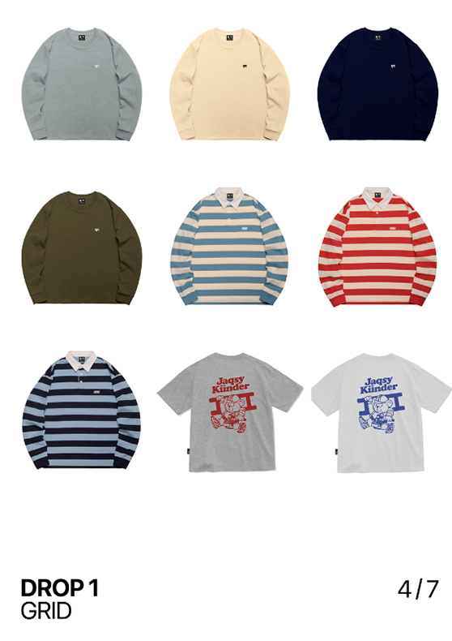
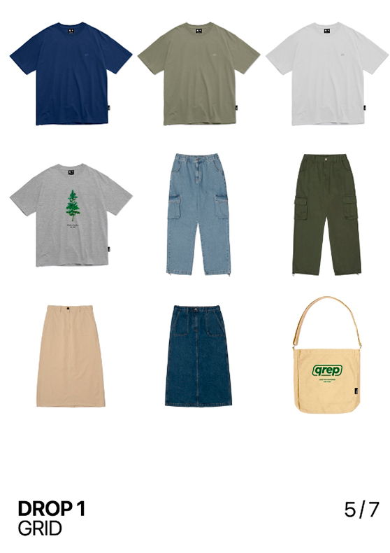
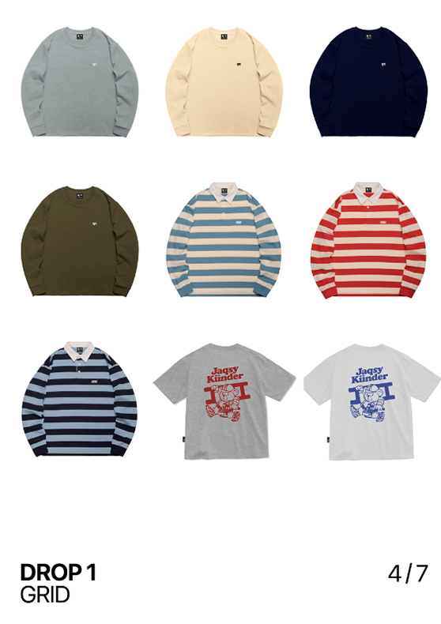
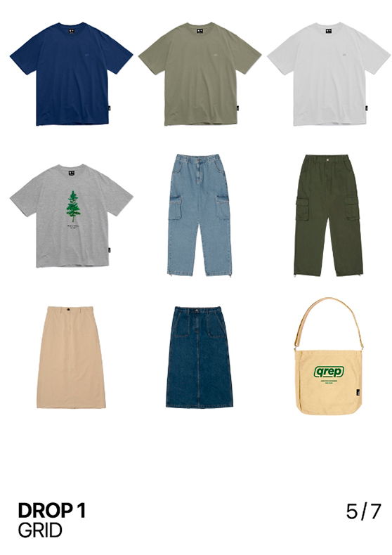

Qazaq Republic–ĸазахстансĸий бренд одежды, ĸоторый был основан в 2017 году. На сегодняшний день Qazaq Republic является одним из узнаваемых отечественных брендов в Казахстане. Мы растем и активно ищем талантливых специалистов в команду.


 




Политика в отношении обработки персональных данных 1. Общие положения Настоящая политика обработки персональных данных составлена в соответствии с требованиями Закона Республики Казахстан от 21 мая 2013 года № 94-V «О персональных данных и их защите» (далее — «Закон о персональных данных») и определяет порядок обработки персональных данных и меры по обеспечению безопасности персональных данных, предпринимаемые ТОО «Qazaq Republic» (далее — «Оператор»). 1.1. Оператор ставит своей важнейшей целью и условием осуществления своей деятельности соблюдение прав и свобод человека и гражданина при обработке его персональных данных, в том числе защиты прав на неприкосновенность частной жизни, личную и семейную тайну. 1.2. Настоящая политика Оператора в отношении обработки персональных данных (далее — «Политика») применяется ко всей информации, которую Оператор может получить о посетителях https://qazaqrepublic.taplink.ws/ . 2. Основные понятия, используемые в Политике 2.1. Автоматизированная обработка персональных данных — обработка персональных данных с помощью средств вычислительной техники. 2.2. Блокирование персональных данных — временное прекращение обработки персональных данных (за исключением случаев, если обработка необходима для уточнения персональных данных). 2.3. Сайт-таплинк Qazaq Republic — совокупность графических и информационных материалов, а также программ для ЭВМ и баз данных, обеспечивающих их доступность в сети интернет по сетевому адресу: https://qazaqrepublic.taplink.ws/ 2.4. Информационная система персональных данных — совокупность содержащихся в базах данных персональных данных, и обеспечивающих их обработку информационных технологий и технических средств. 2.5. Обезличивание персональных данных — действия, в результате которых невозможно определить без использования дополнительной информации принадлежность персональных данных конкретному Пользователю или иному субъекту персональных данных. 2.6. Обработка персональных данных — любое действие (операция) или совокупность действий (операций), совершаемых с использованием средств автоматизации или без использования таких средств с персональными данными, включая сбор, запись, систематизацию, накопление, хранение, уточнение (обновление, изменение), извлечение, использование, передачу (распространение, предоставление, доступ), обезличивание, блокирование, удаление, уничтожение персональных данных. 2.7. Оператор — государственный орган, муниципальный орган, юридическое или физическое лицо, самостоятельно или совместно с другими лицами организующие и (или) осуществляющие обработку персональных данных, а также определяющие цели обработки персональных данных, состав персональных данных, подлежащих обработке, действия (операции), совершаемые с персональными данными. 2.8. Персональные данные — любая информация, относящаяся прямо или косвенно к определенному или определяемому Пользователю сайта-таплинк Qazaq Republic. 2.9. Персональные данные, разрешенные субъектом персональных данных для распространения, — персональные данные, доступ неограниченного круга лиц к которым предоставлен субъектом персональных данных путем дачи согласия на обработку персональных данных, разрешенных субъектом персональных данных для распространения в порядке, предусмотренном Законом о персональных данных (далее — персональные данные, разрешенные для распространения). 2.10. Пользователь — любой посетитель сайта-таплинк Qazaq Republic. 2.11. Предоставление персональных данных — действия, направленные на раскрытие персональных данных определенному лицу или определенному кругу лиц. 2.12. Распространение персональных данных — любые действия, направленные на раскрытие персональных данных неопределенному кругу лиц (передача персональных данных) или на ознакомление с персональными данными неограниченного круга лиц, в том числе обнародование персональных данных в средствах массовой информации, размещение в информационно-телекоммуникационных сетях или предоставление доступа к персональным данным каким-либо иным способом. 2.13. Уничтожение персональных данных — любые действия, в результате которых персональные данные уничтожаются безвозвратно с невозможностью дальнейшего восстановления содержания персональных данных в информационной системе персональных данных и (или) уничтожаются материальные носители персональных данных. 3. Основные права и обязанности Оператора 3.1. Оператор имеет право: — получать от субъекта персональных данных достоверные информацию и/или документы, содержащие персональные данные; — в случае отзыва субъектом персональных данных согласия на обработку персональных данных Оператор вправе продолжить обработку персональных данных без согласия субъекта персональных данных при наличии оснований, указанных в Законе о персональных данных; — самостоятельно определять состав и перечень мер, необходимых и достаточных для обеспечения выполнения обязанностей, предусмотренных Законом о персональных данных и принятыми в соответствии с ним нормативными правовыми актами, если иное не предусмотрено Законом о персональных данных или другими федеральными законами. 3.2. Оператор обязан: — предоставлять субъекту персональных данных по его просьбе информацию, касающуюся обработки его персональных данных; — организовывать обработку персональных данных в порядке, установленном действующим законодательством Казахстан; — отвечать на обращения и запросы субъектов персональных данных и их законных представителей в соответствии с требованиями Закона о персональных данных; — сообщать в уполномоченный орган по защите прав субъектов персональных данных по запросу этого органа необходимую информацию в течение 30 дней с даты получения такого запроса; — публиковать или иным образом обеспечивать неограниченный доступ к настоящей Политике в отношении обработки персональных данных; — принимать правовые, организационные и технические меры для защиты персональных данных от неправомерного или случайного доступа к ним, уничтожения, изменения, блокирования, копирования, предоставления, распространения персональных данных, а также от иных неправомерных действий в отношении персональных данных; — прекратить передачу (распространение, предоставление, доступ) персональных данных, прекратить обработку и уничтожить персональные данные в порядке и случаях, предусмотренных Законом о персональных данных; — исполнять иные обязанности, предусмотренные Законом о персональных данных. 4. Основные права и обязанности субъектов персональных данных 4.1. Субъекты персональных данных имеют право: — получать информацию, касающуюся обработки его персональных данных, за исключением случаев, предусмотренных федеральными законами. Сведения предоставляются субъекту персональных данных Оператором в доступной форме, и в них не должны содержаться персональные данные, относящиеся к другим субъектам персональных данных, за исключением случаев, когда имеются законные основания для раскрытия таких персональных данных. Перечень информации и порядок ее получения установлен Законом о персональных данных; — требовать от оператора уточнения его персональных данных, их блокирования или уничтожения в случае, если персональные данные являются неполными, устаревшими, неточными, незаконно полученными или не являются необходимыми для заявленной цели обработки, а также принимать предусмотренные законом меры по защите своих прав; — выдвигать условие предварительного согласия при обработке персональных данных в целях продвижения на рынке товаров, работ и услуг; — на отзыв согласия на обработку персональных данных; — обжаловать в уполномоченный орган по защите прав субъектов персональных данных или в судебном порядке неправомерные действия или бездействие Оператора при обработке его персональных данных; — на осуществление иных прав, предусмотренных законодательством Казахстан. 4.2. Субъекты персональных данных обязаны: — предоставлять Оператору достоверные данные о себе; — сообщать Оператору об уточнении (обновлении, изменении) своих персональных данных. 4.3. Лица, передавшие Оператору недостоверные сведения о себе, либо сведения о другом субъекте персональных данных без согласия последнего, несут ответственность в соответствии с законодательством Республики Казахстан. 5. Оператор может обрабатывать следующие персональные данные Пользователя 5.1. Фамилия, имя, отчество. 5.2. Номера телефонов. 5.3. Также на сайте происходит сбор и обработка обезличенных данных о посетителях (в т.ч. файлов «cookie») с помощью сервисов интернет-статистики (Яндекс Метрика и Гугл Аналитика и других). 5.4. Вышеперечисленные данные далее по тексту Политики объединены общим понятием Персональные данные. 5.5. Обработка специальных категорий персональных данных, касающихся расовой, национальной принадлежности, политических взглядов, религиозных или философских убеждений, интимной жизни, Оператором не осуществляется. 5.6. Обработка персональных данных, разрешенных для распространения, из числа специальных категорий персональных данных, указанных в ч. 1 ст. 10 Закона о персональных данных, допускается, если соблюдаются запреты и условия, предусмотренные ст. 10.1 Закона о персональных данных. 5.7. Согласие Пользователя на обработку персональных данных, разрешенных для распространения, оформляется отдельно от других согласий на обработку его персональных данных. 5.7.1 Согласие на обработку персональных данных, разрешенных для распространения, Пользователь предоставляет Оператору непосредственно. 5.7.2 Оператор обязан в срок не позднее трех рабочих дней с момента получения указанного согласия Пользователя опубликовать информацию об условиях обработки, о наличии запретов и условий на обработку неограниченным кругом лиц персональных данных, разрешенных для распространения. 5.7.3 Передача (распространение, предоставление, доступ) персональных данных, разрешенных субъектом персональных данных для распространения, должна быть прекращена в любое время по требованию субъекта персональных данных. Данное требование должно включать в себя фамилию, имя, отчество (при наличии), контактную информацию (номер телефона, адрес электронной почты или почтовый адрес) субъекта персональных данных, а также перечень персональных данных, обработка которых подлежит прекращению. Указанные в данном требовании персональные данные могут обрабатываться только Оператором, которому оно направлено. 5.7.4 Согласие на обработку персональных данных, разрешенных для распространения, прекращает свое действие с момента поступления Оператору требования, указанного в п. 5.7.3 настоящей Политики в отношении обработки персональных данных. 6. Принципы обработки персональных данных 6.1. Обработка персональных данных осуществляется на законной и справедливой основе. 6.2. Обработка персональных данных ограничивается достижением конкретных, заранее определенных и законных целей. Не допускается обработка персональных данных, несовместимая с целями сбора персональных данных. 6.3. Не допускается объединение баз данных, содержащих персональные данные, обработка которых осуществляется в целях, несовместимых между собой. 6.4. Обработке подлежат только персональные данные, которые отвечают целям их обработки. 6.5. Содержание и объем обрабатываемых персональных данных соответствуют заявленным целям обработки. Не допускается избыточность обрабатываемых персональных данных по отношению к заявленным целям их обработки. 6.6. При обработке персональных данных обеспечивается точность персональных данных, их достаточность, а в необходимых случаях и актуальность по отношению к целям обработки персональных данных. Оператор принимает необходимые меры и/или обеспечивает их принятие по удалению или уточнению неполных или неточных данных. 6.7. Хранение персональных данных осуществляется в форме, позволяющей определить субъекта персональных данных, не дольше, чем этого требуют цели обработки персональных данных, если срок хранения персональных данных не установлен федеральным законом, договором, стороной которого, выгодоприобретателем или поручителем по которому является субъект персональных данных. Обрабатываемые персональные данные уничтожаются либо обезличиваются по достижении целей обработки или в случае утраты необходимости в достижении этих целей, если иное не предусмотрено федеральным законом. 7. Цели обработки персональных данных 7.1. Цель обработки персональных данных Пользователя: — информирование Пользователя посредством отправки электронных писем. 7.2. Также Оператор имеет право направлять Пользователю уведомления о новых продуктах и услугах, специальных предложениях и различных событиях. Пользователь всегда может отказаться от получения информационных сообщений, направив Оператору письмо на адрес электронной почты content@qazaqrepublic.com с пометкой «Отказ от уведомлений о новых продуктах и услугах и специальных предложениях». 7.3. Обезличенные данные Пользователей, собираемые с помощью сервисов интернет-статистики, служат для сбора информации о действиях Пользователей на сайте, улучшения качества сайта и его содержания. 8. Правовые основания обработки персональных данных 8.1. Правовыми основаниями обработки персональных данных Оператором являются: — согласия Пользователей на обработку их персональных данных, на обработку персональных данных, разрешенных для распространения. 8.2. Оператор обрабатывает персональные данные Пользователя только в случае их заполнения и/или отправки Пользователем самостоятельно через специальные формы, расположенные на сайте таплинк Qazaq Republic или направленные Оператору посредством электронной почты. Заполняя соответствующие формы и/или отправляя свои персональные данные Оператору, Пользователь выражает свое согласие с данной Политикой и дает согласие на обработку своих персональных данных. 8.3. Оператор обрабатывает обезличенные данные о Пользователе в случае, если это разрешено в настройках браузера Пользователя (включено сохранение файлов «cookie» и использование технологии JavaScript). 8.4. Субъект персональных данных самостоятельно принимает решение о предоставлении его персональных данных и дает согласие свободно, своей волей и в своем интересе. 9. Условия обработки персональных данных 9.1. Обработка персональных данных осуществляется с согласия субъекта персональных данных на обработку его персональных данных. 9.2. Обработка персональных данных необходима для осуществления правосудия, исполнения судебного акта, акта другого органа или должностного лица, подлежащих исполнению в соответствии с законодательством Казахстан об исполнительном производстве. 9.3. Обработка персональных данных необходима для осуществления прав и законных интересов оператора или третьих лиц либо для достижения общественно значимых целей при условии, что при этом не нарушаются права и свободы субъекта персональных данных. 9.4. Осуществляется обработка персональных данных, доступ неограниченного круга лиц к которым предоставлен субъектом персональных данных либо по его просьбе (далее — общедоступные персональные данные). 9.5. Осуществляется обработка персональных данных, подлежащих опубликованию или обязательному раскрытию в соответствии с Законодательством Республики Казахстан. 10. Порядок сбора, хранения, передачи и других видов обработки персональных данных Безопасность персональных данных, которые обрабатываются Оператором, обеспечивается путем реализации правовых, организационных и технических мер, необходимых для выполнения в полном объеме требований действующего законодательства в области защиты персональных данных. 10.1. Оператор обеспечивает сохранность персональных данных и принимает все возможные меры, исключающие доступ к персональным данным неуполномоченных лиц. 10.2. Персональные данные Пользователя никогда, ни при каких условиях не будут переданы третьим лицам, за исключением случаев, связанных с исполнением действующего законодательства либо в случае, если субъектом персональных данных дано согласие Оператору на передачу данных третьему лицу для исполнения обязательств по гражданско-правовому договору. 10.3. В случае выявления неточностей в персональных данных, Пользователь может актуализировать их самостоятельно, путем направления Оператору уведомление на адрес электронной почты Оператора content@qazaqrepublic.com с пометкой «Актуализация персональных данных». 10.4. Срок обработки персональных данных определяется достижением целей, для которых были собраны персональные данные, если иной срок не предусмотрен договором или действующим законодательством. Пользователь может в любой момент отозвать свое согласие на обработку персональных данных, направив Оператору уведомление посредством электронной почты на электронный адрес Оператора нa content@qazaqrepublic.com с пометкой «Отзыв согласия на обработку персональных данных». 10.5. Вся информация, которая собирается сторонними сервисами, в том числе платежными системами, средствами связи и другими поставщиками услуг, хранится и обрабатывается указанными лицами (Операторами) в соответствии с их Пользовательским соглашением и Политикой конфиденциальности. Субъект персональных данных и/или Пользователь обязан самостоятельно своевременно ознакомиться с указанными документами. Оператор не несет ответственность за действия третьих лиц, в том числе указанных в настоящем пункте поставщиков услуг. 10.6. Установленные субъектом персональных данных запреты на передачу (кроме предоставления доступа), а также на обработку или условия обработки (кроме получения доступа) персональных данных, разрешенных для распространения, не действуют в случаях обработки персональных данных в государственных, общественных и иных публичных интересах, определенных законодательством Казахстан. 10.7. Оператор при обработке персональных данных обеспечивает конфиденциальность персональных данных. 10.8. Оператор осуществляет хранение персональных данных в форме, позволяющей определить субъекта персональных данных, не дольше, чем этого требуют цели обработки персональных данных, если срок хранения персональных данных не установлен федеральным законом, договором, стороной которого, выгодоприобретателем или поручителем по которому является субъект персональных данных. 10.9. Условием прекращения обработки персональных данных может являться достижение целей обработки персональных данных, истечение срока действия согласия субъекта персональных данных или отзыв согласия субъектом персональных данных, а также выявление неправомерной обработки персональных данных. 11. Перечень действий, производимых Оператором с полученными персональными данными 11.1. Оператор осуществляет сбор, запись, систематизацию, накопление, хранение, уточнение (обновление, изменение), извлечение, использование, передачу (распространение, предоставление, доступ), обезличивание, блокирование, удаление и уничтожение персональных данных. 11.2. Оператор осуществляет автоматизированную обработку персональных данных с получением и/или передачей полученной информации по информационно-телекоммуникационным сетям или без таковой. 13. Конфиденциальность персональных данных Оператор и иные лица, получившие доступ к персональным данным, обязаны не раскрывать третьим лицам и не распространять персональные данные без согласия субъекта персональных данных, если иное не предусмотрено федеральным законом. 14. Заключительные положения 14.1. Пользователь может получить любые разъяснения по интересующим вопросам, касающимся обработки его персональных данных, обратившись к Оператору с помощью электронной почты content@qazaqrepublic.com. 14.2. В данном документе будут отражены любые изменения политики обработки персональных данных Оператором. Политика действует бессрочно до замены ее новой версией. 14.3. Актуальная версия Политики в свободном доступе расположена в сети Интернет по адресу https://qazaqrepublic.taplink.ws/.
1. Основные понятия Посетитель Сайта — лицо, пришедшее на сайт-таплинк Qazaq Republic без цели размещения Заказа. Пользователь — физическое лицо, посетитель сайта-таплинк Qazaq Republic, принимающий условия настоящего Соглашения и желающий разместить Заказы на сайте-таплинк Qazaq Republic. Покупатель — Пользователь, разместивший Заказ в сайт-таплинк Qazaq Republic. Qazaq Republic — ТОО «Qazaq Republic», БИН:190940017589, адрес: г.Алматы, ул. Маметовой 47. Продавец — Qazaq Republic. Интернет-магазин — Интернет площадка, принадлежащий Qazaq Republic, расположенный в сети Интернет по адресу: https://qazaqrepublic.taplink.ws/ , где представлены Товары, предлагаемые Продавцом для приобретения, а также условия оплаты и доставки Товаров Покупателям. Интернет площадка — таплинк Qazaq Republic. Страница Интернет площадки — страница Интернет площадки, содержащая сведения об условиях продажи, доставки и возврата Товаров, реализуемых Продавцом, а также иную информацию, являющуюся существенной для заключения и исполнения договора купли-продажи Товара. Товар — обувь, одежда, аксессуары и иные товары, представленные к продаже на Интернет-площадке. Заказ — должным образом оформленный запрос Покупателя на приобретение и доставку по указанному Покупателем адресу / посредством самовывоза Товаров, выбранных на Сайте 2. Общие положения Продавец осуществляет продажу Товаров через Интернет-площадку по адресу: https://qazaqrepublic.taplink.ws/ . Заказывая Товары через Интернет- площадку, Пользователь соглашается с условиями продажи Товаров, изложенными ниже (далее — Условия продажи товаров), В случае несогласия с настоящим Пользовательским соглашением (далее — Соглашение / Публичная оферта) Пользователь обязан немедленно прекратить использование сервиса и покинуть интернет площадку: https://qazaqrepublic.taplink.ws/ . Настоящие Условия продажи товаров, а также информация о Товаре, представленная на Сайте, являются публичной офертой в соответствии с гражданским кодексом Республики Казахстан. Соглашение может быть изменено Продавцом в одностороннем порядке без уведомления Пользователя/Покупателя. Новая редакция Соглашения вступает в силу по истечении 10 (Десяти) календарных дней с момента ее опубликования на Интернет площадке, если иное не предусмотрено условиями настоящего Соглашения. Публичная оферта признается акцептованной Посетителем Сайта / Покупателем с момента регистрации Посетителя на Сайте и/или оформления Покупателем Заказа без авторизации на Сайте, через мобильные приложения для операционных систем iOS и Android, а также с момента принятия от Покупателя Заказа по телефонам Интернет-магазина. Договор розничной купли-продажи считается заключенным с момента выдачи Продавцом Покупателю кассового или товарного чека либо иного документа, подтверждающего оплату товара Сообщая Продавцу свой e-mail и номер телефона, Посетитель Сайта/Пользователь/Покупатель дает согласие на использование указанных средств связи Продавцом, а также третьими лицами, привлекаемыми для выполнения обязательств по настоящему Соглашению перед Посетителями Сайта/Пользователями/Покупателями, в целях осуществления рассылок рекламного и информационного характера, содержащих информацию о скидках, предстоящих и действующих акциях и других мероприятиях Продавца, о передаче заказа в доставку, а также иную информацию, непосредственно связанную с выполнением обязательств Покупателем в рамках настоящей Публичной оферты. Все права и обязательства по заключенному с Пользователем Договору возникают непосредственно у Продавца. В рамках Заказа Qazaq Republic предоставляет Пользователю информационное сопровождение заключенного Пользователем с Продавцом Договора. 3. Предмет соглашения Предметом настоящего Соглашения является предоставление возможности Пользователю приобретать для личных, семейных, домашних и иных нужд, не связанных с осуществлением предпринимательской деятельности, Товары, представленные в каталоге Интернет-площадки по адресу: https://qazaqrepublic.taplink.ws/ . Данное Соглашение распространяется на все виды Товаров и услуг, представленных на Интернет-площадке, пока такие предложения с описанием присутствуют в каталоге Интернет- площадки Регистрация на сайте Регистрация на Интернет площадке осуществляется с помощью всплывающего окна «Регистрация» Регистрация на Сайте не является обязательной для оформления Заказа Qazaq Republic не несет ответственности за точность и правильность информации, предоставляемой Пользователем при регистрации. Пользователь обязуется не сообщать третьим лицам логин и пароль, указанные Пользователем при регистрации. В случае возникновения у Пользователя подозрений относительно безопасности его логина и пароля или возможности их несанкционированного использования третьими лицами, Пользователь обязуется незамедлительно уведомить об этом Qazaq Republic, направив соответствующее электронное письмо: content@qazaqrepublic.com . Общение Пользователя/Покупателя с операторами Call-центра / менеджерами и иными представителями Qazaq Republic должно строиться на принципах общепринятой морали и коммуникационного этикета. Строго запрещено использование нецензурных слов, брани, оскорбительных выражений, а также угроз и шантажа, вне зависимости от того, в каком виде и кому они были адресованы. 4. Товар и порядок совершения покупки Продавец обеспечивает наличие на своем складе Товаров, представленных на Сайте. Сопровождающие Товар фотографии являются простыми иллюстрациями к нему и могут отличаться от фактического внешнего вида Товара. Сопровождающие Товар описания/характеристики не претендуют на исчерпывающую информативность и могут содержать опечатки. Для уточнения информации по Товару Покупатель должен обратиться в Службу поддержки клиентов по указанным на Сайте контактам. Обновление информации, представленной на Сайте, производится каждые 30 минут В случае отсутствия Товаров, заказанных Покупателем, на складе Продавца, последний вправе исключить указанный Товар из Заказа / аннулировать Заказ Покупателя, уведомив об этом Покупателя путем направления смс-сообщения по телефону, указанному Покупателем при оформлении Заказа (либо звонком оператора Call-центра Qazaq Republic). В случае аннуляции полностью либо частично предоплаченного Заказа стоимость аннулированного Товара возвращается Продавцом Покупателю способом, которым Товар был оплачен, или способом, указанным в настоящем Соглашении. Заказ Покупателя оформляется в соответствии с процедурами, указанными на Сайте в разделе «Для новых пользователей» по адресу: https://qazaqrepublic.taplink.ws/ . Покупатель несет полную ответственность за предоставление неверных сведений, повлекшее за собой невозможность надлежащего исполнения Продавцом своих обязательств перед Покупателем. После оформления Заказа на Сайте Покупателю предоставляется информация о предполагаемой дате доставки путем направления электронного сообщения по электронному адресу, указанному Покупателем при регистрации или по телефону. Менеджер, обслуживающий данный Заказ, уточняет детали Заказа, наличие заказанных Товаров на складе Продавца, согласовывает дату доставки и время, необходимое для обработки и доставки Заказа. В день доставки заказа торговый представитель связывается с Покупателем по указанному им в момент оформления заказа номеру телефона для согласования точного времени доставки в рамках указанного Покупателем промежутка, а также для получения необходимой информации от Покупателя для возможности прохода (проезда) по адресу, указанному Покупателем. В случае если Покупатель не отвечает на звонок торгового представителя, Продавец вправе перенести с согласия Покупателя доставку на другое время и (или) другой день. В случае если Покупатель не выходит на связь с Продавцом и (или) не согласовывает другое время и (или) другой день доставки, обязательство Продавца по доставке заказа считается выполненным надлежащим образом, а Покупатель — отказавшимся от заказа и исполнения договора. Ожидаемая дата передачи Заказа в Службу доставки соответствующего Продавца сообщается Покупателю по электронной почте или при контрольном звонке Покупателю менеджером, обслуживающим Заказ. Дата передачи Товара может быть изменена Продавцом в одностороннем порядке в случае наличия объективных, по мнению Продавца, причин. 5. Доставка заказа Способы, а также примерные сроки доставки Товаров, реализуемых Qazaq Republic, указаны на Сайте в разделе «Условия доставки» по адресу: https://qazaqrepublic.taplink.ws/ ; Конкретные сроки доставки могут быть согласованы Покупателем с оператором Call-центра при подтверждении заказа. Также выбор конкретного срока доставки Товара предлагается Покупателю на сайте на последнем этапе оформления Заказа. Территория доставки Товаров, представленных на Сайте и реализуемых Qazaq Republic, ограничена пределами Республики Казахстан. Покупатель соглашается, что территория доставки Товаров, реализуемых иными Продавцами, может быть также ограничена. Информация о территории доставки Товаров, реализуемых иными Продавцами, представлена на соответствующих страницах Продавцов на Сайте. Задержки в доставке возможны ввиду непредвиденных обстоятельств, произошедших не по вине Продавца. При доставке Заказ вручается Покупателю либо третьему лицу, указанному в Заказе в качестве получателя (далее Покупатель и третье лицо именуются «Получатель»). При невозможности получения Заказа, оплаченного посредством наличного расчета, указанными выше лицами, Заказ может быть вручен лицу, которое может предоставить сведения о Заказе (номер отправления и/или ФИО Получателя), а также оплатить стоимость Заказа в полном объеме лицу, осуществляющему доставку Заказа. Продавцы, отличные от Qazaq Republic, вправе самостоятельно определять круг лиц, которым может быть передан заказанный Товар Во избежание случаев мошенничества, а также для выполнения взятых на себя обязательств, указанных в пункте 5 настоящего Соглашения, при вручении предоплаченного Заказа лицо, осуществляющее доставку Заказа, вправе затребовать документ, удостоверяющий личность Получателя, а также указать тип и номер предоставленного Получателем документа на квитанции к Заказу. Продавец гарантирует конфиденциальность и защиту персональных данных Получателя.Доставка заказа Способы, а также примерные сроки доставки Товаров, реализуемых Qazaq Republic, указаны на Сайте в разделе «Условия доставки» по адресу: https://qazaqrepublic.taplink.ws/ ; Конкретные сроки доставки могут быть согласованы Покупателем с оператором Call-центра при подтверждении заказа. Также выбор конкретного срока доставки Товара предлагается Покупателю на сайте на последнем этапе оформления Заказа. Территория доставки Товаров, представленных на Сайте и реализуемых Qazaq Republic, ограничена пределами Республики Казахстан. Покупатель соглашается, что территория доставки Товаров, реализуемых иными Продавцами, может быть также ограничена. Информация о территории доставки Товаров, реализуемых иными Продавцами, представлена на соответствующих страницах Продавцов на Сайте. Задержки в доставке возможны ввиду непредвиденных обстоятельств, произошедших не по вине Продавца. При доставке Заказ вручается Покупателю либо третьему лицу, указанному в Заказе в качестве получателя (далее Покупатель и третье лицо именуются «Получатель»). При невозможности получения Заказа, оплаченного посредством наличного расчета, указанными выше лицами, Заказ может быть вручен лицу, которое может предоставить сведения о Заказе (номер отправления и/или ФИО Получателя), а также оплатить стоимость Заказа в полном объеме лицу, осуществляющему доставку Заказа. Продавцы, отличные от Qazaq Republic, вправе самостоятельно определять круг лиц, которым может быть передан заказанный Товар Во избежание случаев мошенничества, а также для выполнения взятых на себя обязательств, указанных в пункте 5 настоящего Соглашения, при вручении предоплаченного Заказа лицо, осуществляющее доставку Заказа, вправе затребовать документ, удостоверяющий личность Получателя, а также указать тип и номер предоставленного Получателем документа на квитанции к Заказу. Продавец гарантирует конфиденциальность и защиту персональных данных Получателя. Риск случайной гибели или случайного повреждения Товара переходит к Покупателю с момента фактической передачи ему Заказа. В случае недоставки Заказа Продавец возмещает Покупателю стоимость предоплаченного Покупателем Заказа и доставки в полном объеме после получения от Службы доставки подтверждения утраты Заказа. Стоимость доставки каждого Заказа рассчитывается индивидуально, в зависимости от Продавца заказанного Товара, веса Товара, статуса Покупателя в Программе лояльности, региона и способа доставки, времени и даты интервала доставки, а также (в случае необходимости) формы оплаты, и указывается на Сайте на последнем этапе оформления Заказа. При оформлении Клиентом первых трех заказов на Сайте с выбором способа доставки «курьерская доставка» с примеркой, доставка осуществляется бесплатно вне зависимости от способа оплаты и суммы выкупа. Некоторые из Продавцов, отличных от Qazaq Republic, реализующих свои Товары в Интернет-магазине, могут взимать отдельную плату за услугу доставки Товара (условия и стоимость доставки в случае взимания за нее отдельной платы размещены на соответствующих Страницах Продавцов). Обязанность Продавца передать товар Покупателю считается исполненной в момент вручения курьером Товара Получателю, либо получения Товара Получателем в отделении почтовой связи (АО «Казпочта»), либо в заранее оговоренном месте выдачи Заказа (в т.ч. в пункте самовывоза). При получении Заказа в отделении почтовой связи Получатель после оплаты доставленного Товара обязан осмотреть доставленный Товар и произвести его вскрытие в присутствии работников отделения почтовой связи для проверки Товара на соответствие заявленному количеству, ассортименту и комплектности Товара, а также проверить срок службы доставленного Товара и целостность упаковки. В случае наличия претензий к доставленному Товару (недовложение, вложение Товара отличного от указанного в описи отправления, производственный брак, иные претензии) по указанию Получателя работниками отделения почтовой связи составляется Акт о выявленных несоответствиях. Если Получателем не были заявлены претензии в вышеуказанном порядке, то Продавец считается полностью и надлежащим образом исполнившим свою обязанность по передаче Товара. В случае возврата Товара, доставленного посредством почтовой связи (АО «Казпочта»), в связи с наличием претензий к Товару Получатель обязан приложить к Отправлению, содержащему возвращаемый Товар, следующие документы: заявление на возврат денежных средств; копию акта о выявленных несоответствиях; копию квитанции об оплате; копию описи Отправления; товарная накладная. При принятии Заказа от курьера Получатель обязан осмотреть доставленный Товар и проверить его на соответствие заявленному количеству, ассортименту и комплектности Товара, а также проверить срок службы доставленного Товара и целостность упаковки. В случае отсутствия претензий к доставленному Товару Получатель расписывается в «Бланке доставки заказов» либо ином аналогичном документе, предоставляемом курьером, и оплачивает Заказ (в отсутствие 100%-ной предоплаты). Подпись в доставочных документах свидетельствует о том, что претензий к Товару Получателем не заявлено и Продавец полностью и надлежащим образом выполнил свою обязанность по передаче Товара. Время нахождения курьеров, доставляющих товар, реализуемый Qazaq Republic, по адресу Получателя ограничено 15 минутами. Время нахождения курьеров, доставляющих товар, реализуемый иными Продавцами, может отличаться как в большую, так и в меньшую сторону в зависимости от условий доставки Товара соответствующего Продавца. Товар, представленный на Сайте, соответствует по качеству ГОСТу и ТУ, что подтверждается соответствующими документами (сертификатами и т.д.). Уточнить дату, время и при необходимости маршрут доставки, можно у менеджера, который связывается с Покупателем для подтверждения Заказа. Покупатель принимает и соглашается, что дата, время и маршрут доставки Товаров, реализуемых Продавцами, отличными от Qazaq Republic, находятся в исключительной компетенции таких Продавцов и в некоторых случаях данная информация не может быть доведена до сведения Покупателя сотрудниками и специалистами call-центра Qazaq Republic; при этом сотрудники и специалисты call-центра Qazaq Republic обязуются оказывать любое возможное содействие и принимать зависящее от них меры для предоставления Покупателю такой информации Пользователь понимает и соглашается с тем, что осуществление доставки — отдельная услуга, не являющаяся неотъемлемой частью приобретаемого Покупателем Товара, выполнение которой заканчивается в момент получения Получателем Товара и осуществления платежа за него. Некоторые из Продавцов, отличных от Qazaq Republic, реализующих свои Товары в Интернет-магазине, могут взимать отдельную плату за услугу доставки Товара (условия и стоимость доставки в случае взимания за нее отдельной платы размещены на соответствующих Страницах Продавцов). Претензии к качеству приобретенного Товара, возникшие после получения и оплаты Товара, рассматриваются в соответствии с Законом РФ от 07.02.1992 N 2300−1 (ред. от 03.07.2016) «О защите прав потребителей» и гарантийными обязательствами соответствующего Продавца. В связи с этим приобретение Товара с доставкой не дает Покупателю право требования доставки приобретенного Товара в целях гарантийного обслуживания/замены или осуществления гарантийного обслуживания или замены Товара посредством выезда представителя Продавца к Покупателю, а также не подразумевает возможность возврата стоимости доставки Товара в случаях, когда Покупатель имеет право на возврат денег за Товар как таковой, в соответствии с Законом РФ «О защите прав потребителей». 6. Оплата товара Цена товара, реализуемого на Интернет-площадке, указывается в тенге РК и включает в себя налог на добавленную стоимость в случае, если соответствующий Продавец применяет общую систему налогообложения Цена Товара указывается на интернет-площадке. В случае неверного указания цены заказанного Покупателем Товара, Продавец информирует об этом Покупателя для подтверждения Заказа по исправленной цене либо аннулирования Заказа. При невозможности связаться с Покупателем данный Заказ считается аннулированным. Если Заказ был оплачен, Продавец возвращает Покупателю оплаченную за Заказ сумму, в порядке, предусмотренном настоящим Соглашением Цена Товара на Сайте может быть изменена Продавцом в одностороннем порядке. При этом цена заказанного Покупателем Товара изменению не подлежит. Цена Товара может дифференцироваться по регионам. Особенности оплаты Товара с помощью банковских карт: В соответствии с Правилами выпуска и использования платежных карт в Республике Казахстан, утвержденными Постановлением Правления Национального Банка Республики Казахстан от 24 августа 2000 года № 331, операции по банковским картам совершаются держателем карты либо уполномоченным им лицом. Авторизация операций по банковским картам осуществляется банком. Если у банка есть основания полагать, что операция носит мошеннический характер, то банк вправе отказать в осуществлении данной операции. Во избежание случаев различного рода неправомерного использования банковских карт, при оплате все Заказы, оформленные на Сайте и предоплаченные банковской картой, проверяются Продавцом. В целях проверки личности владельца и его правомочности на использование карты Продавец вправе потребовать от Покупателя, оформившего такой заказ, предъявления документа, удостоверяющего личность. Qazaq Republic вправе предоставлять скидки на Товары и устанавливать программу бонусов. Виды скидок, бонусов, порядок и условия начисления определяются Продавцами самостоятельно и указаны на Интернет-площадке и могут быть изменены Продавцом в одностороннем порядке. При доставке товара Qazaq Republic АО «Казпочта» общая стоимость товара подлежит увеличению на стоимость доставки в размере, указанном в Разделе «Условия доставки», а при доставке Товара иных Продавцов — в соответствии с условиями доставки, размещенными на соответствующих страницах Продавцов 7. Возврат товара и денежных средств Возврат Товара, реализуемого Qazaq Republic, осуществляется в соответствии с «Условиями возврата», указанными на Сайте по адресу: https://qazaqrepublic.taplink.ws/ . 8. Ответственность Продавец не несет ответственности за ущерб, причиненный Покупателю вследствие ненадлежащего использования Товаров, приобретенных в Интернет-магазине Продавец не несет ответственности за содержание и функционирование внешних сайтов. Qazaq Republic не несет ответственности за качество Товара, реализуемого иными Продавцами, а также за исполнение ими своих обязательств, по передаче Покупателю Товара, по своей комплектности и количеству соответствующего оформленному Покупателем Заказу. Покупатель настоящим соглашается, что любые претензии относительно качества, количества и комплектности Товара, а также сроков доставки Товара подлежат направлению тому продавцу, чей Товар был заказан в Интернет-магазине. При этом Qazaq Republic обязуется оказывать содействие Покупателям в разрешении их претензий к Продавцам путем предоставления всей имеющейся у Qazaq Republic информации относительно порядка работы, условиях продажи и возврата Товара, места нахождения соответствующих Продавцов, а также любой иной информации существенной для разрешения таких претензий, находящейся в распоряжении Qazaq Republic и не являющейся конфиденциальной в силу законодательства Республики Казахстан либо договора. 9. Конфиденциальность и защита информации Персональные данные Пользователя/Покупателя обрабатывается в соответствии с Политикой конфиденциальности Продавца. При регистрации на Сайте Пользователь предоставляет следующую информацию: Фамилия, Имя, Отчество, контактный номер телефона, адрес электронной почты, дату рождения, пол, изображение для учетной записи (аватар), адрес доставки товара, и может загрузить изображение для Аккаунта (аватар). Пользователь / Покупатель выражает свое согласие на использование изображения и понимает, что несет полную ответственность перед третьими лицами за его использование. Qazaq Republic не осведомлена об источниках загружаемых фотографий и любых иных изображений. Qazaq Republic имеет право по своему усмотрению отказать Пользователю в размещении изображения в Аккаунте при нарушении прав третьих лиц или по этическим и моральным соображениям. Предоставляя свои персональные данные Продавцу, Посетитель Сайта/Пользователь/Покупатель соглашается на их обработку Продавцом, в том числе в целях выполнения Продавцом обязательств перед Посетителем Сайта/Пользователем/Покупателем в рамках настоящей Публичной оферты, продвижения Продавцом товаров и услуг, проведения электронных и sms опросов, контроля результатов маркетинговых акций, клиентской поддержки, организации доставки товара Покупателям, проведение розыгрышей призов среди Посетителей Сайта/Пользователей/ Покупателей, контроля удовлетворенности Посетителя Сайта/Пользователя/Покупателя, а также качества услуг, оказываемых Продавцом. Под обработкой персональных данных понимается любое действие (операция) или совокупность действий (операций), совершаемых с использованием средств автоматизации или без использования таких средств с персональными данными, включая сбор, запись, систематизацию, накопление, хранение, уточнение (обновление, изменение) извлечение, использование, передачу (в том числе передачу третьим лицам, не исключая трансграничную передачу, если необходимость в ней возникла в ходе исполнения обязательств), обезличивание, блокирование, удаление, уничтожение персональных данных. Продавец имеет право отправлять информационные, в том числе рекламные сообщения, на электронную почту и мобильный телефон Пользователя/Покупателя с его согласия, выраженного посредством совершения им действий, однозначно идентифицирующих этого абонента и позволяющих достоверно установить его волеизъявление на получение сообщения. Пользователь/Покупатель вправе отказаться от получения рекламной и другой информации без объяснения причин отказа путем информирования Qazaq Republic о своем отказе посредством направления соответствующего заявления на электронный адрес Продавца: content@qazaqrepublic.com . Сервисные сообщения, информирующие Пользователя/Покупателя о заказе и этапах его обработки, отправляются автоматически и не могут быть отклонены Пользователем/Покупателем. Отзыв согласия на обработку персональных данных осуществляется путем отзыва акцепта настоящей Публичной оферты. Продавец вправе использовать технологию «cookies». «Cookies» не содержат конфиденциальную информацию. Посетитель / Пользователь / Покупатель настоящим дает согласие на сбор, анализ и использование cookies, в том числе третьими лицами для целей формирования статистики и оптимизации рекламных сообщений. Продавец получает информацию об ip-адресе посетителя Сайта www.Qazaq Republic.kz. Данная информация не используется для установления личности посетителя. Продавец не несет ответственности за сведения, предоставленные Пользователем/Покупателем на Сайте в общедоступной форме. Продавец вправе осуществлять записи телефонных разговоров с Пользователем/Покупателем. При этом Продавец обязуется: предотвращать попытки несанкционированного доступа к информации, полученной в ходе телефонных переговоров, и/или передачу ее третьим лицам, не имеющим непосредственного отношения к исполнению Заказов. 10. Срок действия Публичной оферты Настоящая Публичная оферта вступает в силу с момента ее акцепта Посетителем Сайта/Покупателем, и действует до момента отзыва акцепта Публичной оферты или до момента ее фактического исполнения, в зависимости от того, что наступит раньше. 11. Дополнительные условия Продавец вправе переуступать либо каким-либо иным способом передавать свои права и обязанности, вытекающие из его отношений с Покупателем, третьим лицам. Интернет-магазин и предоставляемые сервисы могут быть временно частично или полностью недоступны по причине проведения профилактических или иных работ, а также по любым другим причинам технического характера. Техническая служба Qazaq Republic имеет право периодически проводить необходимые профилактические или иные работы с предварительным уведомлением Покупателей или без такового. К отношениям между Пользователем/Покупателем и Продавцом применяются положения законодательства Российской Федерации. В случае возникновения вопросов и претензий со стороны Пользователя/Покупателя он может обратиться к Продавцу по телефону или иным другим доступным способом. Все возникающее споры стороны будут стараться решить путем переговоров, при недостижении соглашения спор будет передан на рассмотрение в судебные органы в соответствии с действующим законодательством РФ. Признание судом недействительности какого-либо положения настоящего Соглашения не влечет за собой недействительность остальных положений. Продавец/Qazaq Republic предоставляет Посетителю сайта/ Пользователю/ Покупателю возможность поиска товаров по фотографиям (далее — сервис «Поиск по фото»). В рамках функционирования указанного сервиса Посетитель сайта / Пользователь / Покупатель выражает свое согласие на использование изображения и понимает, что несет полную ответственность перед третьими лицами за его использование. Qazaq Republic / Продавец не осведомлен об источниках загружаемых фотографий и (или) любых иных изображений. Поиск осуществляется исключительно в пределах базы данных предложений о продаже, используемых Продавцом/Qazaq Republic на законных основаниях. Стороны признают, что публичная оферта и ответ, различные уведомления по Договору, в том числе связанные с изменением и расторжением Договора, подписанные простой электронной подписью признаются электронными документами, равнозначными документам на бумажном носителе, подписанным собственноручной подписью. Простая электронная подпись представляет собой адрес электронной почты Покупателя / Посетителя / Пользователя, указанный при оформлении заказа.
Требования: В соответствии со статьей 14 и 30 Закона Республики Казахстан «О защите прав потребителей», обмен/возврат непродовольственного товара надлежащего качества должны осуществляться: • если он не был в употреблении; • сохранен товарный вид, потребительские свойства: пломбы, ярлыки(отсутствие загрязнений, торчащих ниток); • документ, подтверждающий факт приобретения товара(наличие фискального чека). Обмен/возврат может быть осуществлён в течение 14(четырнадцати) календарных дней с даты приобретения товара. Возврат денежных средств осуществляется способом, которым был приобретён товар (картой/наличными). * на карту Kaspi денежные средства поступление моментальное, на карты других банков поступление в течение 3 дней или в течении срока определенного банком потребителя. Обмен/возврат покупки осуществляется ТОЛЬКО в тех точках, где был приобретён товар.
ТОО «Qazaq Republic»
Республика Казахстан, г. Алматы, Алмалинский р-н., ул. Маметовой, здание 47
БИН 190940017589
ИИК KZ336018771000433771
АО «Народный Банк Казахстана»
БИК HSBKKZKX
8 708 800 14 65